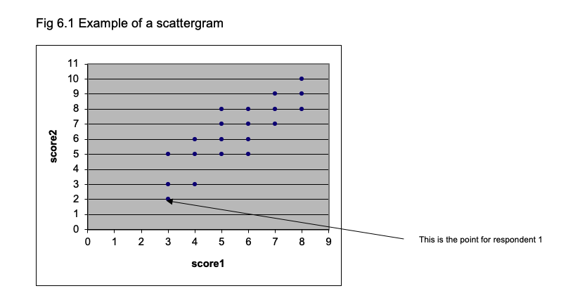

Chapter 10 z scores and percentiles
10.0.1 Standard deviation of the normal curve: z scores
There are three major aspects of the normal curve shown in Fig 1.5 that you should appreciate. First, it is symmetrical, with the ‘middle’ being equal to the mean. Secondly, normal curves vary in their ‘spread’. The spread of the distribution is related to the standard deviation of the scores. Thirdly, one can measure off the horizontal axis in standard deviations.
For example, assume we have measured the breadth of hand of 500 British men aged 19-45 years. The measurements form a normal distribution, with a mean of 85 mm and a standard deviation of 5 (Pheasant, 1986). The frequency distribution is shown in Fig 4.1a, where the horizontal indicates hand breadth in mm and the vertical is frequency. We can plot the measurements along the horizontal in terms of the number of standard deviations they are away from the mean; a score of 90 mm is 1 standard deviation above the mean, so the 90 mm point can be expressed as +1 sd. Similarly, a score of 75 mm is 2 standard deviations below the mean, so can be expressed as -2 sd. Fig 4.1b shows the horizontal axis scaled in sd units. There are a number of points to note. First, very nearly all the distribution lies between -3 sd (70 mm) and +3 sd (100 mm) from the mean. For a perfect normal distribution curve, the precise location of standard deviations along the horizontal is known.
A vital property of the normal distribution curve is that it is known what proportion of the curve lies between any given positions along the horizontal axis, when the horizontal is in standard deviation units. One way to appreciate this is to remember that the normal curve is symmetrical. This means that 50% of the curve is above the mean, and 50% is below. (If we take the area under the curve as 1.00, we can say that 0.50 of the distribution is above the mean and 0.50 is below it.) The mean corresponds to a value of 0 when the horizontal is in standard deviation units, because it is 0 standard deviations away from the mean. So we know that 0.50 of the curve is below the position where the horizontal score in sd units is 0.

Statisticians also know how much of the curve lies below +1 sd, -2 sd, +1.96 sd and any other value we care to suggest. For example, it is known that 0.8413 of the area under the curve falls below +1 sd. So how much is included in the area between the mean (0 sd) and +1 sd (i.e. 1 sd above the mean)? You can see from Fig 4.2 that the answer is 0.8413 - 0.500 = 0.3413. In percentages: 84.13% - 50% = 34.13%.
When we express a score in standard deviation units from the mean, they are known as z-units. So +1 sd = +1z, -2.46 sd = -2.46z.
10.0.2 Using normal curve (z) tables
To find the area under the curve for any z value, use the table of the normal curve. If you look at the z table, you will see there are entries for values of z from 0 (i.e. where z equals the mean) to z = 3.9. The entries are the same whether z is + or -, so only one set of values is given.)
An example of one line in that table is:
The z table lets us answer various questions about how one score compares with others. Remember that the z table uses sd units, so if we are dealing with ordinary scores, we have to transform them into z units before we can use the table. Here is an example. The mean for hand breadth is 85 mm and the standard deviation is 5 mm. So what proportion of the men measured had a hand breadth less than 95 mm? To answer this question, transform the score of 95 mm into z units by finding the difference between the score (95) and the mean (85) and dividing the result by the sd (5). In this case, you get a value of +2. So 95 mm is +2z (2 standard deviations above the mean). In the table of z, you will find that the area in the larger portion of the curve is .9772; therefore the proportion of men who had a hand breadth less than 95 mm is 97.72%.
10.0.3 Comparing scores using z values
Using z scores, we can compare the scores of tests where the mean and standard deviation differ. If Joseph Smith has a hand breadth of 90 mm, we know he has a large hand, because his hand is larger than 84.13% of the population. (90 mm is 5 mm or 1 standard deviation above the mean, and the z table tells us that the proportion of the population falling below this value is .8413 or 84.13%.)
Suppose Katherine Smith has a hand breadth of 81 mm. Is this a large hand? When you know that the mean hand breadth for British women is 75 mm and the standard deviation = 4 mm, you can find out how many of the population of British women have a smaller hand than Katherine Smith. Her hand is 6 mm wider than the average; as the standard deviation for women’s hands is 4 mm, Katherine’s is 1.5 standard deviations larger than the mean. From the z table you will find that this means Katherine’s hand is larger than .9332 or 93.32% of British women’s hands. So Katherine has a larger hand, compared with other women, than Joseph, compared with other men. You would never have been able to draw this conclusion if you had only known that Joseph’s hand was 90 mm and Katherine’s was 81 mm!
The z tables are particularly useful when you are dealing with the results of standardized tests. Once you know the mean and sd of the normative sample who were used to standardize the test, you can use z tables to discover whether any particular score is ‘high’ or ‘low’ by finding out the proportion of the normative sample who scored less than the score of the person you have tested.
10.0.4 z-scores and percentiles
When a score is at the 84th percentile, 84% of people score below it. So you might expect that percentiles can be related to z scores, and indeed this is the case. The z table shows that when z = +1.00, the portion of the curve below z is .8413 (84.13%) i.e. if someone scores at +1z, he has surpassed 84% of the population. So the percentile score is 84. Percentile scores are valuable because they tell you immediately how a particular score stand relative to the scores of the standardization sample, the people who provided the distribution of scores on the test. However, percentiles only show the relative standing of a score compared with the standardization sample. They do not tell you the amount of difference between the raw scores of two people.
10.0.5 Calculating percentiles from a frequency distribution
When you have a set of scores such as those shown in Exercise 1.2, the percentiles for any score can be found if you calculate the cumulative frequencies. To do this, put the frequencies in ascending order. Then simply add the frequencies for each frequency to the total of frequencies for the lower frequency values. As an example, the frequencies for the scores from Exercise 1.2 are shown in Table 4.1 and the cumulative frequencies are also shown.
To find the percentile value for any value of x, the formula is: Percentile = [ (cf - (f/2) ) /N ] * 100
So to find the percentile value for the x value of 9 in Table 4.1,
Percentile = [ (25 - (7/2) / 55 ] * 100
= [ ( 25 - 3.5) / 55 ] * 100
= [ 21.5 / 55 ] * 100
= [ 0.39 ] * 100
= 39
| x | f | cf |
|---|---|---|
| 1 | 1 | 1 |
| 2 | 1 | 2 |
| 3 | 1 | 3 |
| 4 | 2 | 5 |
| 5 | 2 | 7 |
| 6 | 3 | 10 |
| 7 | 4 | 14 |
| 8 | 4 | 18 |
| 9 | 7 | 25 |
| 10 | 8 | 33 |
| 11 | 6 | 39 |
| 12 | 5 | 44 |
| 13 | 1 | 45 |
| 14 | 4 | 49 |
| 15 | 3 | 52 |
| 16 | 2 | 54 |
| 17 | 1 | 55 |
10.0.6 T scores, stens and stanines
A disadvantage of standard z scores is that they can be negative and use decimal places. So simpler scales are sometimes used. T scores have a mean of 50 and a standard deviation of 10. Sten scores have a mean of 5.5 and a standard deviation of 2. Stanines have a mean of 5 and a standard deviation of approximately 2. Stanine is a contraction of the phrase ‘standard nine’, and reminds you that with this scale scores run from 1 to 9. The normal curve percentages are related to stanines as shown in Table 4.2. This indicates that the lowest 4% of the scores have a stanine of 1, the next 7% have a stanine of 2 and so on.
Table 4.2 Relationship of stanines to normal curve percentages
Stanine Normal curve percentage 1 4 2 7 3 12 4 17 5 20 6 17 7 12 8 7 9 4
10.1 Standard error and confidence limits
10.1.1 The concept of standard error
Inferential statistics involve estimating the characteristics of a population from the data obtained from a sample of that population. For example, one uses the mean of the sample to estimate the population mean. If one took a large set of samples from the population, the means of the samples would form a normal distribution. The standard deviation of that distribution is given by taking the standard deviation of the sample and dividing it by the square root of n, the number in the sample. This is the Standard Error.
The Standard Error allows one to state the probability that the true mean of the population is within specified limits. From the properties of the normal distribution, it can be deduced that upon repeated testing with the same configuruation, the true mean of the population would be captured between plus or minus approximately 2 standard errors of the sample mean (which would differ every time) 95% of the time. Suppose you have taken a sample of 100 subjects from a population and found that the mean of the sample is 50, and the standard deviation is 15. The standard error is 1.5 (15/square root of 100). One can conclude that the true mean of the population would be captured between the sample mean ± 3 95% of the time if you were to repeatedly collect 100 subjects.
10.1.2 Standard error of measurement
The notion of standard error is important because we can look on a person’s test score as an estimate of their ‘true’ score. We can estimate where the true score lies within confidence limits which are determined from the obtained score. This version of the standard error is known as the standard error of measurement.
The standard error measurement is computed from the reliability coefficient of a test by the formula: SE(meas) = sd √ (1- r)
Where sd is the standard deviation of the test scores and r is the reliability coefficient of the test. So for an intelligence test with sd of 15 and a reliability coefficient of 0.90, the SE(meas) = 15 √ (1-0.9 ) = 15 √ (0.1) = 15 (.33) = 5.
Assume that we have given someone this intelligence test and they scored 110. If the person was retested, the obtained score would fluctuate. So we should take the obtained score of 110 as an estimate of the person’s ‘true’ score, the mean of the distribution of scores we would obtain if we took many readings of the person’s test performance. This hypothetical distribution of scores obtained if we retested the person many times would make a normal distribution with a standard deviation equal to the standard error of measurement. We can apply the principles of the normal distribution as we did before. According to the normal curve table, 68% of cases fall between -1sd and + 1sd of the mean; so we can argue that there is a 68% probability that the true score lies between -1 sd and +1sd of the obtained score. With the SE(meas) being 5, this means that there is a 68% probability that the person’s true intelligence test score lies between 105 and 115. Since the normal curve table shows that 99% of the distribution lies between the limits of +or- 2.58 standard deviations, we can be 99% sure that the person’s true score lies within +or- 2.58 SE(meas) values of the obtained score. As 2.58 * 5 is 13, we can be 99% sure that the true score lies within the limits of 97 - 123.
An important aspect of this issue is that a score obtained by giving a person a test is only an estimate of the true score of the person, and so obtained scores should not be seen as fixed, definite features like a person’s height or weight. Rather they should be taken as a guide to the person’s real performance, a guide we can use to make estimates of the limits within which the true score lies.
10.2 Correlation coefficients and scattergrams
10.2.1 The concept of correlation
A correlation expresses the extent to which two variables vary together. A positive correlation means that as one variable increases so does the other. For example, there is a strong positive correlation between size of foot and height, and a weak positive correlation between how much one is paid and one’s job satisfaction. A negative correlation is when one variable increases as the other decreases; for example, there is a negative correlation between job satisfaction and absenteeism: the more satisfied people are with their job, the lower the amount of absenteeism they show.
Correlations vary between -1.00 and +1.00; a correlation of 0.00 means there is no relationship between the two variables. For example, one would expect the correlation between size of foot and job satisfaction to be about 0.00 (although I have never seen any data on this relationship!)
There is one vital factor about correlations that you must not forget, summarised in the aphorism “Correlation does not equal causation”: if variables A and B are correlated, one cannot say that A causes B. It could be that B causes A, or they may both be related to some other factor that produces the variation in A and B. Some examples: absenteeism and job satisfaction are negatively correlated, but one cannot conclude that low job satisfaction causes absenteeism; it is possible that being absent a lot causes the feelings of low job satisfaction. The positive correlation between foot size and height does not mean that having a large foot makes you grow; foot size and overall height are both caused by a common genetic factor.
However, correlations are used to predict one variable from another. Knowing someone’s foot size, one can predict how tall they are better than one could if you did not know their foot size.
Also bear in mind that we are only dealing here with linear correlations. One can have a curvilinear relation between variables. For example, there is a well-known relation between performance and strength of motivation (known as the Yerkes-Dodson law). This states that with low motivation there is poor performance, but as motivation increases so does performance; but with very high motivation, performance declines again. So the relationship is not a linear one. But at this stage we are not concerned with anything more elaborate than a simple linear relationship.
10.2.2 Scattergrams
Whenever you are looking at the relationship between two sets of scores, you should begin by plotting the relationship between them using a scattergram. Suppose we have these sets of scores:
| Respondent | score1 | score2 |
|---|---|---|
| 1 | 3 | 2 |
| 2 | 3 | 5 |
| 3 | 4 | 6 |
| 4 | 5 | 5 |
| 5 | 6 | 5 |
| 6 | 6 | 8 |
| 7 | 3 | 3 |
| 8 | 4 | 3 |
| 9 | 7 | 9 |
| 10 | 8 | 10 |
| 11 | 7 | 7 |
| 12 | 4 | 5 |
| 13 | 8 | 9 |
| 14 | 5 | 7 |
| 15 | 7 | 8 |
| 16 | 6 | 6 |
| 17 | 5 | 8 |
| 18 | 6 | 7 |
| 19 | 5 | 6 |
| 20 | 8 | 8 |
To plot the scattergram, lay out the two axes of the graph so that one represents score1 and the other represents score2, as shown in Fig 6.1. To position each point, find the position for each respondent where the scores for score1 and score2 coincide. The first respondent has 3 on score1 and 2 on score2, so that determines where their data is placed. The other respondents are plotted in a similar way. Figure 6.1 shows the scattergram for the whole set of 20 respondents.

10.2.3 Pearson product moment correlation
This is the measure of correlation you are likely to come across most frequently. It measures the relationship between two variables when the scores are NOT ranks.
Assuming you have two scores (x and y) for each respondent, the formula is:
r = N∑ xy - (∑x)(∑y) / √ [ N ∑x2 - (∑ x)2][ N ∑ y2 - (∑ y)2]To show how this is calculated, here is a small set of data:
| Respondent | Score | Score.1 |
|---|---|---|
| NA | x | y |
| 1 | 3 | 5 |
| 2 | 2 | 6 |
| 3 | 4 | 2 |
| 4 | 4 | 4 |
| 5 | 5 | 7 |
From the formula you will see that we need Σxy, Σx, Σy, Σx2, Σy2, (Σx)2 , (Σy)2.
The only unfamiliar expression here is Σxy, which is obtained by multiplying each value of x with its corresponding y and summing the values.
The table below shows how the various expressions are obtained. Check that you can follow how the value for the correlation is reached.
| X | Score | X.1 | X.2 | Score.1 | X.3 | X.4 | X.5 |
|---|---|---|---|---|---|---|---|
| Respondent | x | x2 | NA | y | y2 | NA | xy |
| 1 | 3 | 9 | NA | 5 | 25 | NA | 15 |
| 2 | 2 | 4 | NA | 6 | 36 | NA | 12 |
| 3 | 4 | 16 | NA | 2 | 4 | NA | 8 |
| 4 | 4 | 16 | NA | 4 | 16 | NA | 16 |
| 5 | 5 | 25 | NA | 7 | 49 | NA | 35 |
| Sums: | 18 | 70 | NA | 24 | 130 | NA | 86 |
r = N∑ xy - (∑x)(∑y) / √ [ N ∑x2 - (∑ x)2][ N ∑ y2 - (∑ y)2]
= 5(86) - (18) (24) / √ [ (5) (70) - 324] [ (5) (130) - 576]
= 430 - 432 / √ [ 350 - 324 ] [ 650 - 576 ]
= -2 / √ [26 ] [ 74]
= -2 / √ [1924]
= -2 / 43.86
= - 0.046 10.2.4 Spearman Rank correlation (rho)
This is a non-parametric correlation and can be used when data is ranks. To calculate rho, you rank the data for each measure (i.e. each column in Exercise 6.2), and then calculate the difference between the ranks. Square these differences, and calculate the sum of the squared differences.
Then rho = 1 - [6Σd2 / N(N2 - 1) ]
10.2.5 Effect of range on correlation
The correlation between two variables is dependent on a number of factors, notably the range of scores one takes. For example, consider the correlation exhibited in the Fig 6.1. If you draw a vertical line at the a value of 4.5 on the horizontal (x) axis and calculate the correlation between score1 and score2 just for the scores greater than 4.5 on score1, the correlation is smaller (I calculate it to be 0.68).
10.2.6 Regression
When two variables are correlated, one can predict the level of an individual on variable x from their standing on variable y (or vice versa: one can predict height from foot size or one can predict foot size from height). When you have a scatterplot, it is possible to draw in the straight line that represents the relationship between x and y. Rather than doing this by guesswork and ‘eye-ball’ inspection, there is a procedure for calculating the best-fitting straight line. We do not need to go into the details, but it is worth knowing that one fits a straight line by the least squares method, which yields a line that minimises the distance beween the points of the scatterplot and the line. The method tells you the slope of the line (how steeply it rises) and the intercept (the point at which it crosses the axis of the graph). When you draw in the best-fitting line, it is known as the regression line.
A regression line can be expressed as an equation like this : \(x = c + by\)
where c is the intercept and b the slope.
One complication is that there is one regression line when you are predicting x from y and a separate one when you are predicting y from x. The best fitting straight line when predicting y (on the vertical axis) from x is the one that minimises the vertical distance between the points on the scatterplot and the line. When you are predicting x from y, the best fitting line minimises the horizontal distance between the points and the regression line.
When we use scores on a to predict scores on b, we use the correlation between a and b. In fact, the correlation coefficient squared (r2) indicates how much of the variance in b is explained by a. So if a correlates with b 0.6, then .36 (36%) of the variance in b is explained by the variance in a.
10.2.7 Multiple regression
This refers to using more than one variable to predict x. Job satisfaction is correlated with pay and with level of occupation. So one can predict job satisfaction from pay and one can predict it from job satisfaction; but one can get a better prediction if one uses both pay and job level as predictors. So one would have an equation of the from:
job satisfaction = pay multiplied by a + level of job multiplied by b
This is an example of a multiple regression equation.